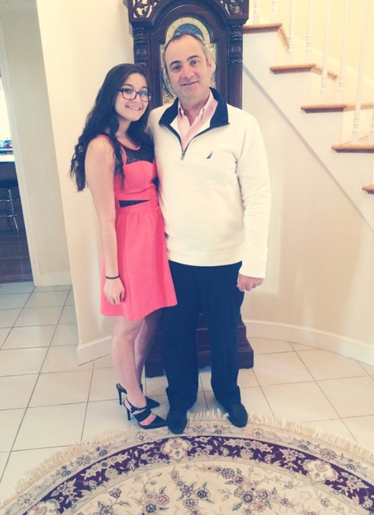
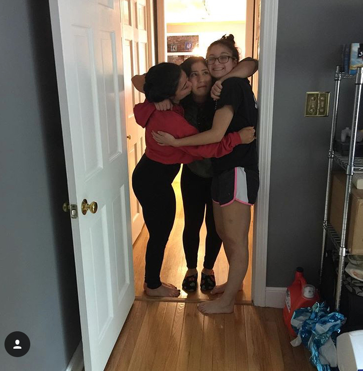

My family is back in Massachusetts where my dad owns his business, Superior which he founded at the age of 18. My dad is single parent who takes care of his three daughters. My oldest sister, Dominique is 25 years old and competes in body building competitions and also is going for licenses in just a few weeks after going through almost eight years of schooling for it. My other sister, Brittany is 21 years old and works as a hair dresser. My sister Brittany hasn't been able to actually begin her role as a hair dresser due to the fact that she was hospitalize well she was 18 years old because she got the rare disease encephalitis which causes the brain to inflame and you to have seizers.
My family comes from sicily, Italy which is the part of Italy that the end of the pensiala. We are a very cultural family and love to cook every sunday for the whole entire family, we make eggplant parmesan, chicken parmesan, lasagna, pasta, garlic bread, cheese and cracker, and many more dishes. For desserts we have probably about ten different types of desserts from pies to pastries.
 